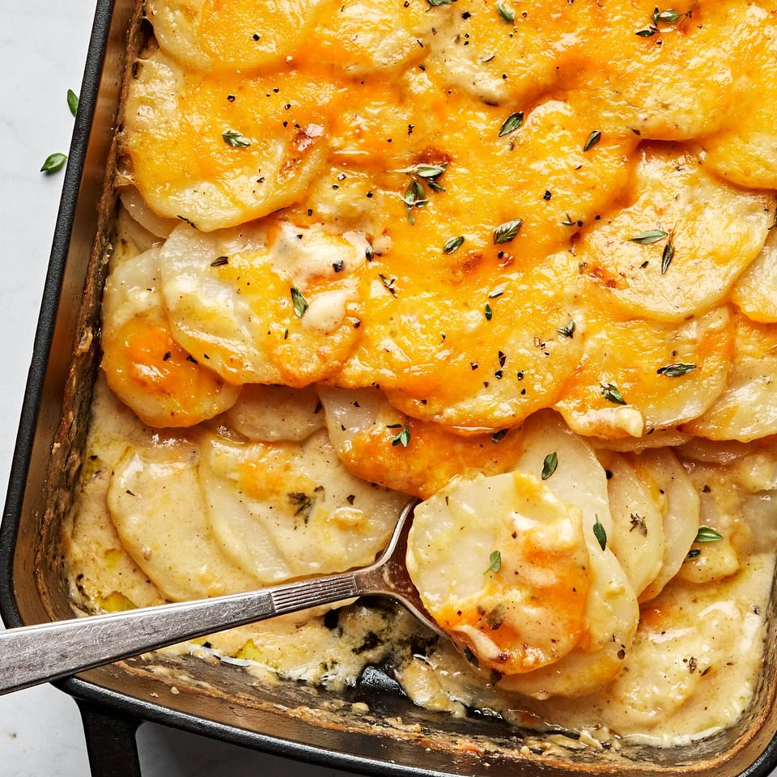

Scalloped Potatoes

Description
Scalloped potatoes are a classic comfort dish featuring thinly sliced potatoes layered in a creamy sauce, often made with milk or cream, and baked until tender and golden. The result is a rich, flavorful casserole with a velvety texture and a lightly crispy top.
Ingredients
- Potatoes (thinly sliced)
- Heavy cream or milk
- Milk
- Flour
- Garlic (optional)
- Salt and pepper (to taste)
- Optional: Cheese (e.g., cheddar or parmesan)
Steps
- Thinly slice the potatoes and set aside.
- Melt butter in a saucepan, stir in flour, and cook briefly. Gradually whisk in cream or milk, cooking until thickened. Season with salt, pepper, and optional garlic.
- In a baking dish, layer sliced potatoes, pouring a bit of sauce over each layer.
- Sprinkle cheese between layers or on top if desired.
- Cover and bake at 375°F (190°C) for 45-50 minutes. Uncover for the last 10-15 minutes to brown the top.
Home